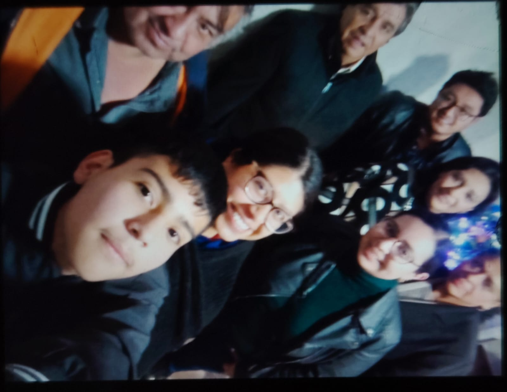

| Cosas de Mi | ||
|---|---|---|
| Familia Y Amigos | Mis virtudes y Defectos | Aspiraciones |
|
Vivo en Ecatepec, Estado de México. Mi familia y yo somos un grupo muy unido, donde siempre nos apoyamos mutuamente en las buenas y en las difíciles. Mi mama ha sido mi mayor ejemplo; me han enseñado a ser honesto, la humilde y responsable, y son el pilar fundamental de mi vida. Cuento con primos con quienes comparto momentos inolvidables, risas, aprendizajes. También tengo grandes amigos, personas que conozco desde años, se han convertido en una parte muy importante de mi vida. Con ellos comparto no solo momentos de diversión, sino también consejos, metas y experiencias que nos ayudan a crecer como personas. Para mí la lealtad y la confianza son muy importantes, y sé que siempre puedo contar con ellos, al igual que ellos pueden contar conmigo en cualquier momento. |
Mis virtudes: Mis defectos: |
Mi meta principal es terminar mis estudios de manera de manera exitosa, adquirir todos los conocimientos posibles y formarme como un profesional competente en el área de la bilogía, tecnología y estudios científicos. Me gustaría trabajar en algo que realmente me apasione, desarrollando proyectos útiles y creativos que aporten soluciones y sirvan para ayudar a las personas. En un futuro cercano me gustaría poder tener mi propio espacio y contribuir económicamente para darle a mi familia todo lo que se merece, retribuyendo así todo el apoyo, el cariño y el esfuerzo que han hecho por mí durante todos estos años. También sueño con seguir aprendiendo constantemente, conocer nuevos lugares y culturas, y ser una persona de bien que deje una huella positiva donde quiera que vaya. |
| FOTOS | ||
|
 |

|

|